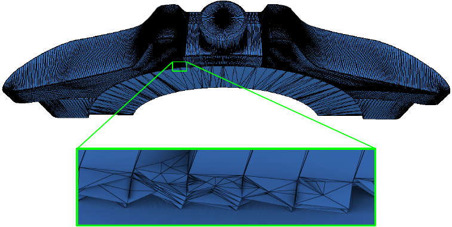

-

3D Constrained Triangulations
A major milestone for the CGAL library, this new package enables the construction of 3D Delaunay triangulations that can preserve a user-defined set of segments and 3D polygons.
-

Fixing Self-Intersections in Polygon Soups and Meshes
With CGAL 6.1, we introduced a new method for reliably resolving self-intersections, a very common defect in real-world meshes, using 3D snap rounding. The algorithm was thoroughly tested on large data sets such as Thingi10k dataset, producing intersection-free outputs in all cases.
-

Remeshing of (Almost) Planar Patches
A new function was introduced to simplify planar patches, with a tolerance available to take into account inherent inaccuracies in real-world inputs. Individual functions are also provided for the different steps of the remeshing process (detection of the planar regions, detection of the corners, ...) to enable fine tuning of the algorithm and customization with user-specific criteria
-

Polygon Repair
This new package offers automatic repair of invalid polygons, polygons with holes, and multipolygons with holes through a fast and generic implementation, with immediate compatibility with other polygon-based CGAL packages.
-

Remeshing with Approximated Discrete Centroidal Voronoi Diagrams
The result of a successful Google Summer of Code project in CGAL, this new remeshing function can be used to improve mesh quality and sharpen features. The algorithm combines the robustness and theoretical strength of Delaunay criteria with the efficiency of entirely discrete geometry processing, with a low complexity (in terms of calculations and memory requirements), allowing the processing of large meshes up to several million triangles.
-

Speeding-up Surface Mesh Clipping and Splitting
Clipping and splitting of polygonal surface meshes received a 10x acceleration, with a brand new corefinement function under the hood based on efficient and exact orientation tests.
-

2D Triangulations on Hyperbolic Surfaces
The new package introduces a data structure and algorithms for triangulations of closed orientable hyperbolic surfaces. It is thus a generalisation of the specific case of the Bolza surface, which is the most symmetric hyperbolic surface of genus 2
CGAL 2025 Highlights
01 January 2026